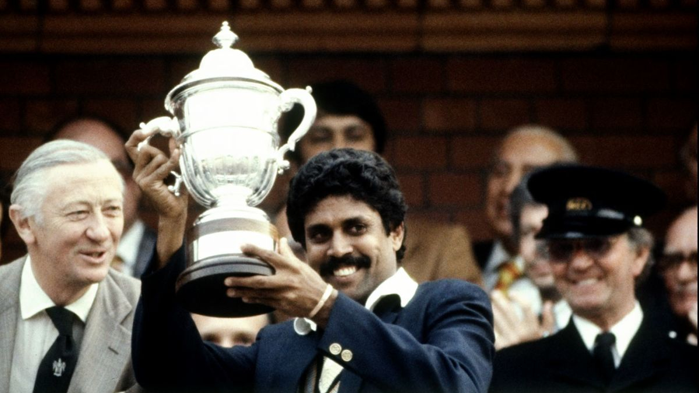

Kapil Dev Ramlal Nikhanj
(Pronunciation: [kəpiːl deːʋ] born 6 January 1959) is an Indian former cricketer. One of the greatest all-rounders in the history of cricket, he was a fast-medium bowler and a hard-hitting middle-order batsman. Dev is the only player in the history of cricket to have taken more than 400 wickets (434 wickets) and scored more than 5,000 runs in Test.[4]
Dev captained the Indian cricket team that won the 1983 Cricket World Cup,[5] becoming the first Indian captain to win the Cricket World his journey of battling Type-2 diabetes for more than 15 years, Kapil Dev spoke at length on how a “disciplined schedule” helped him keep his blood glucose levels under check. The 1984 World Cup-winning captain added that diabetes can be managed efficiently if people stop acting “ignorant” and “follow the right medication”.

Scott Allan
(born 28 November 1991) is a Scottish professional footballer who plays as a midfielder for NIFL Premiership club Larne, on loan from Scottish Championship club Arbroath.
Allan began his career in Scotland with Dundee United, and spent time on loan with Forfar Athletic, before joining English Premier League club West Bromwich Albion in 2012. He never broke into the first team, and after loan spells with Portsmouth (twice), Milton Keynes Dons and Birmingham City, he was released at the end of the 2013–14 season.
Scott Allan has always had to consider his type 1 diabetes when playing football, with his diagnosis coming when he was just three-years-old.